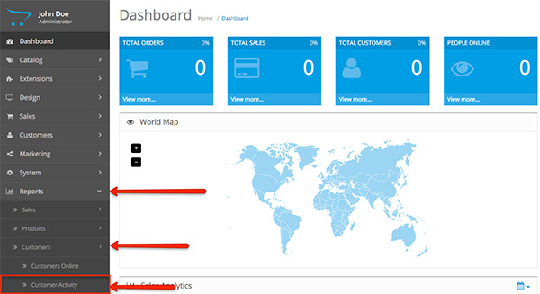
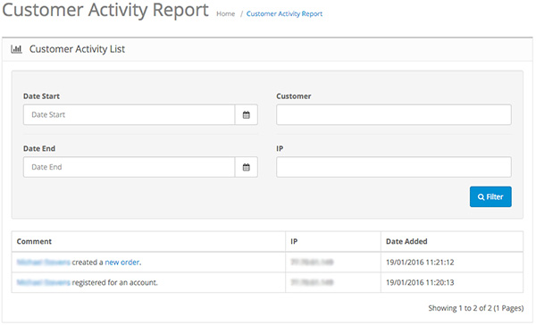

The Customers system in your OpenCart installation allows you to track and manage your customers' accounts from the admin panel. The section is accessed from Customers > Customers. For more information - click here.
To view the Customer Activity Report head to Reports > Customers > Customer Activity:

This section will show you a list of recent activities. You also have a filter for all of your customers and their activity from date to date. You are able to see the account name of each customer, their IP address and their type of activity on each date.

Customer: The name of your customer.
IP: The IP address used by your customer.
Comment: The type of activity of your customers. For example: John Doe registered for an account.